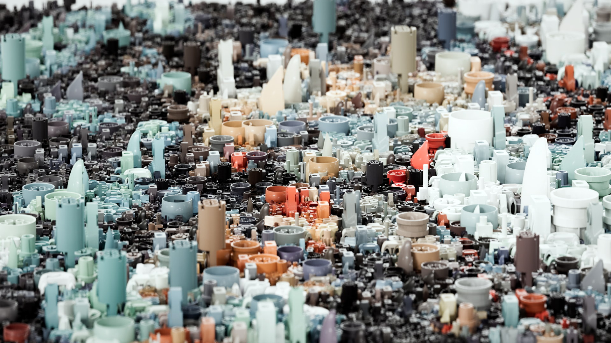
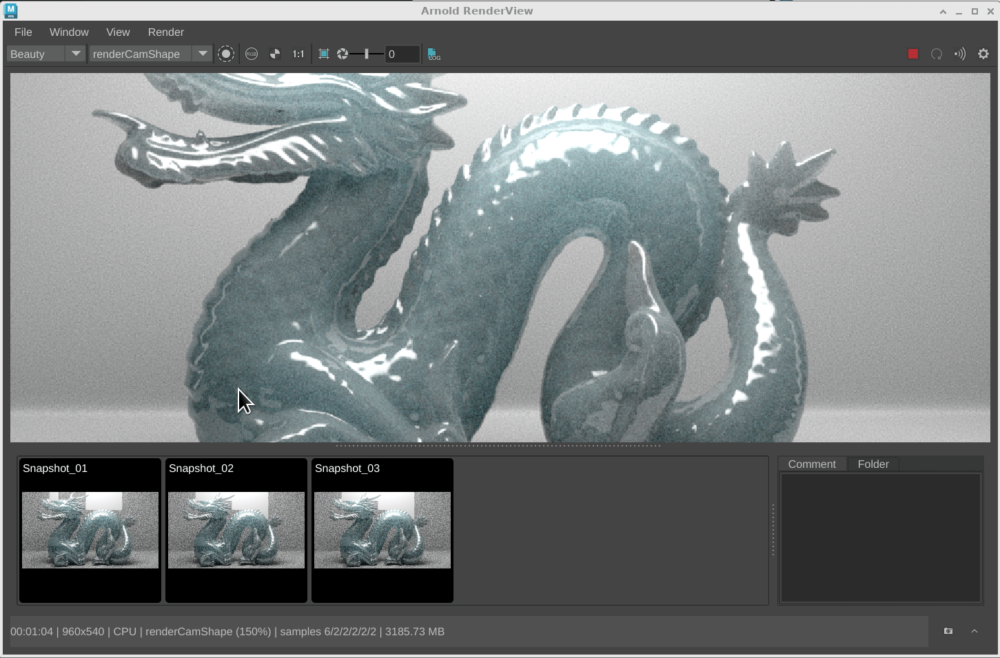
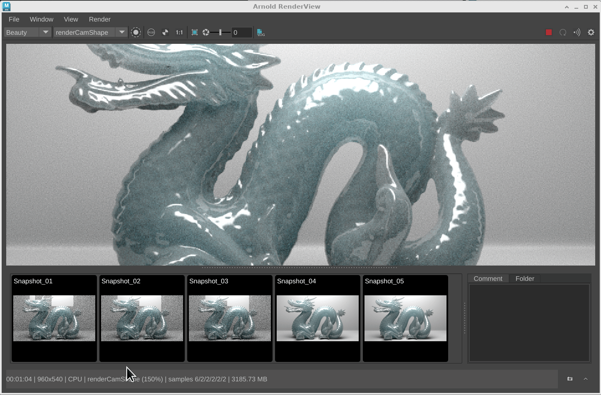
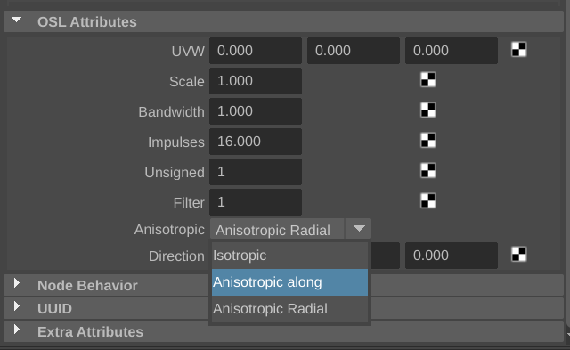

5.4.1
27 March 2024

MtoA 5.4.1 introduces Arnold 7.3.1.0.
Installation
Download Arnold for Maya from your Autodesk Account. See Download Arnold for more information about downloading MtoA from your Autodesk Account.
Follow these installation instructions.
Enhancements
- Denoising by default with Intel Open Image Denoise (OIDN): The Intel ® Open Image Denoiser imager is now added by default to new scenes (MTOA-1787)
 |
|
| without denoising | with imager_denoiser_oidn |
Improvements to the Arnold Render View Snapshots: The snapshot workflow and interface in the Arnold RenderView has multiple enhancements and behaviours.
- Press the S hotkey in the Arnold RenderView to save a snapshot.
- Improved UI for Snapshot buttons (ARNOLD-232)
|  |
| You can now compare snapshots of the same resolution using the Ctrl key modifier when selecting a second snapshot |
|  |
| You can now select multiple snapshots with the Shift modifer and delete multiple selected snapshots with the Del key |
- OSL Enum support in Attribute Editor : Shader parameters of type ENUM on the OSL code node create a combo box with the available options (MTOA-1781)
|  |
| OSL enum parameter values displayed as a drop-down list |
New presets added to aiRampRgb : We have added over 100 presets to the aiRampRGB node (MTOA-1630)
aiStandardVolume assigned on creation of new aiVolume node : When creating a new aiVolume node a new aiStandardVolume shader will be created and assigned to the new node (MTOA-1803)
Update Intel Open Image Denoise (OIDN) to version 2.2.2: The updated denoiser has 10% better performance on CPU, includes some critical bug fixes, and handles high-frequency details better. (ARNOLD-14772)
OptiX denoiser runs on progressive negative AA passes: The OptiX denoiser imager now denoises the low-resolution progressive passes (renders with AA < 0). This should result in higher quality feedback in IPR. (ARNOLD-11487)
 |
| Left side shows the previous behavior where denoising was only applied to the AA > 0 passes. Right side is new behavior where all progressive passes are denoised. |
|
MaterialX node definitions: The MaterialX node definitions for Arnold shaders now use the standard surfaceshader and volumeshader types, which make them easier to use in DCCs and mix with standard library shaders. The UI for Arnold MaterialX shaders is also improved with the addition of parameter groups and node categories. (ARNOLD-14717, ARNOLD-14736, ARNOLD-14716)
OCIO environment variable priority: The OCIO environment variable now takes priority over the configuration file set in the Arnold OCIO color manager as well as the builtin OCIO configuration file. A new
ignore_environment_variableparameter on the OCIO color manager causes Arnold to ignore the value of the environment variable and restores the previous behavior. The OCIO environment variable is also now taken into account by maketx. (ARNOLD-9012)Curves in procedural viewport API: Procedurals now return curves nodes in
AI_PROC_POLYGONSviewport mode. This is an API change only. MtoA does not yet use this API for displaying curves in the viewport. (ARNOLD-14756)
USD Enhancements
- Improved support for USD cameras (MTOA-1597)
- Cameras from a USD Stage are displayed in the Render View Camera list
- You can use UFE camera paths when rendering in batch
- USD Stage cameras are listed in the Render Settings if they are set to the "default" or "render" purpose.
- Light linking on custom procedurals: You can now use light linking on custom procedurals such as Yeti in the render delegate. (usd#1730)
- Improved tooltips: The tooltips in DCCs for Arnold nodes in USD is much improved. usd#1835
- Imager node support: USD support for the new Arnold
AI_NODE_IMAGERnode type. usd#1870 - Export ArnoldOptions as UsdRenderSettings - The Arnold USD exporter covnerts the Arnold options node to UsdRenderSettings, UsdRenderProduct, and UsdRenderVar nodes. usd#1852, usd#1865
- Velocities motion blur for points - Points with a velocities attribute now render with motion blur. usd#1868
- Better default for transmission ray depth - Set the default transmission depth to 8, so that the default settings work better with glass, and to match default in other Arnold plugins like HtoA and MtoA. usd#1889
API changes
- Imager plugin API: A public API is now available for imagers. This adds support for custom and third-party imagers in Arnold. (ARNOLD-10322)
The API is built upon a new AI_NODE_IMAGER node type and is implemented via two main API.
imager_evaluateallows you to modify output pixels of a render.
#define imager_evaluate
static void ImagerEvaluate(AtRenderSession* render_session, AtNode* node, struct AtOutputIterator* iterator, int bucket_xo, int bucket_yo, int bucket_size_x, int bucket_size_y, uint16_t tid)imager_prepareis an optional API allows you to query the outputs an imager will recieve and prepare any evaluation specific data.
#define imager_prepare
static void ImagerPrepare(AtRenderSession* render_session, AtNode* node, const AtNode* driver, struct AtOutputIterator* iterator, AtImagerSchedule& schedule);Additionally, there are a couple of helper APIs for the imager_prepare method. These API let you request additional inputs to be rendered for imager evaluation, and to add additional output layers that the user may want to write to the driver.
AI_API bool AiImagerAddInput(AtRenderSession* render_session, const AtNode* imager, const AtNode* driver, int aov_type, AtString aov_name, AtNode* filter);
AI_API bool AiImagerAddOutput(AtRenderSession* render_session, const AtNode* imager, const AtNode* driver, int output_type, AtString output_name);- Improved builtin metadata: Node and node parameter definitions have been further augmented with metadata that could be useful across DCCs. The metadata that have been added or improved are the following: help, category, ui.groups. Some of these metadata were previously distributed as separate mtd files in each DCC. (ARNOLD-14677, ARNOLD-14678, ARNOLD-14702, ARNOLD-14661)
USD Enhancements
- Light linking on custom procedurals: You can now use light linking on custom procedurals such as Yeti in the render delegate. (usd#1730)
- Improved tooltips: The tooltips in DCCs for Arnold nodes in USD is much improved. usd#1835
- Imager node support: USD support for the new Arnold
AI_NODE_IMAGERnode type. usd#1870 - Export ArnoldOptions as UsdRenderSettings - The Arnold USD exporter covnerts the Arnold options node to UsdRenderSettings, UsdRenderProduct, and UsdRenderVar nodes. usd#1852, usd#1865
- Velocities motion blur for points - Points with a velocities attribute now render with motion blur. usd#1868
- Better default for transmission ray depth - Set the default transmission depth to 8, so that the default settings work better with glass, and to match default in other Arnold plugins like HtoA and MtoA. usd#1889
Incompatible Changes
- OCIO environment variable priority: The OCIO environment variable now takes priority over the file set in the Arnold OCIO color manager. Setting
color_manager_ocio.ignore_environment_variabletotruerestores the previous behavior.
Bug Fixes
- ARNOLD-6309 - System locale should not affect .ass reading or writing
- ARNOLD-366 - [RenderView] Display glitches for high res images in the snapshot folder
- ARNOLD-365 - [RenderView] Selected snapshot label gets truncated
- ARNOLD-364 - [RenderView] snapshot labels are hard to read due to BG and FG colors
- ARNOLD-238 - [RenderView] A/B snapshots labels are too small
- ARNOLD-14693 - [RenderView] Changing test resolution during render gives incorrect resolution
- ARNOLD-14033 - [RenderView] Snapshots cannot be viewed after rendering with a different resolution
- MTOA-1198 - Importing aiImagerLensEffects fails with Error.
- MTOA-1608 - OCIO env var not respected by MayaBatch/Render.exe
- MTOA-1740 - Maya USD export does not work if you load Yeti after MtoA
- MTOA-1779 - Import Shader cannot connect range to vector_map.input
- MTOA-1778 - Import Shader cannot connect vector_map to shadingEngine.displacement
- MTOA-1815 - Exporting Arnold nodes to USD fails to author animated attributes
- MTOA-1848 - Error message occurred when clicking Export All to .ASS or Export Selection to .ASS
- MTOA-1864 - TX Manager freezes maya if there's an error while IPR is running
- MTOA-1865 - Viewport render does not account for isolate select on initialization
- MTOA-1796 - Disabling "Isolate Select" in Viewport render doesn't revert to normal rendering
- usd#1547 - Fix mesh lights shutoff when there is a light link in the scene.
- usd#1859 - Support PointInstancer invisibleIDs for lights
- usd#1881 - Support UDIM and relative paths on mtlx image shaders
- usd#1884 - Set a proper name to skydome image node in Hydra
- usd#1890 - Reduce VtArray memory consumption, specially in the instancer.
- usd#1874 - Shader output attributes should be outputs:out to match the Sdr registry
- usd#1878 - Make Arnold relative path optional for image shaders
- usd#1873 - Ensure materials are written under a scope primitive
System Requirements
- Maya 2023, 2024, or 2025
- Windows 10 or later, with the Visual Studio 2019 redistributable.
- Linux with at least glibc 2.17 and libstdc++ 4.8.5 (gcc 4.8.5). This is equivalent to RHEL/CentOS 7.
- x86-64 CPUs need to support the SSE4.1 instruction set.
- macOS 10.13 or later, macOS 11 and later for Maya 2024
- Apple Mac models with M series chips:
- Natively supported by Arnold for Maya 2024
- Supported under Rosetta 2 mode for older versions of Maya
- GPU rendering works on Windows and Linux only and requires an NVIDIA GPU with the Maxwell architecture or later.
- On Linux, we recommend 535.104 or higher drivers.
- On Windows, we recommend 537.13 or higher drivers.
- Optix™ denoiser requires an NVidia GPU with CUDA™ Compute Capability 5.0 and above.